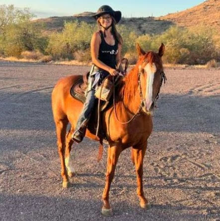

Ms. Taylor
Head Trainer & Manager
Our lead trainer, passionate about fostering true horsemanship through clear communication between horse and rider. With deep experience in equitation, she helps riders refine their skills and build confidence and precision — drawing on many disciplines and a real understanding of the horse's mind.